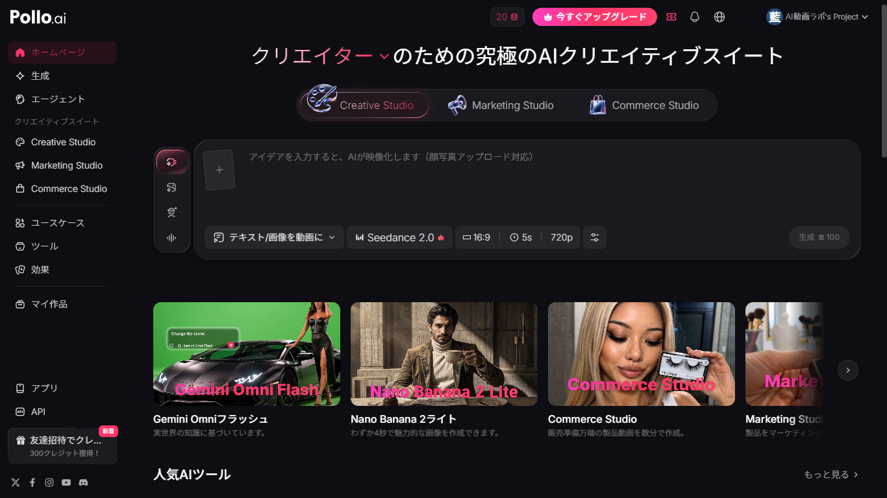

Seedance 2.0とは？ — 今もっとも注目されているAI動画生成モデル
Seedance 2.0は、ByteDanceが開発したAI動画生成モデルです。2026年に入ってから検索数が急上昇しており（前年比+900%）、AI動画生成の分野で最も注目度の高いモデルの一つになっています。
Seedanceの最大の特徴は「参照駆動型」の生成方式です。テキストプロンプトに加えて、参照画像（@Image）、参照動画（@Video）、音声（@Audio）を同時に指定でき、キャラクターの外見・動き・背景・音声までを一貫してコントロールできます。複数のシーンをまたいでもキャラクターの一貫性が保たれるため、ストーリー性のある連続した映像を作りやすいのが強みです。
ただし、Seedance 2.0には公式サイトがありません。利用するにはSeedance 2.0と連携しているプラットフォームを経由する必要があります。Jimeng AI（中国向け）、Dreamina、各種サードパーティサービスなどがありますが、この記事ではPollo AIを使った方法を紹介します。
Pollo AIならSeedanceを含む50以上のモデルを1アカウントで利用可能
Pollo AIを無料で始めるなぜPollo AI経由がおすすめなのか
Seedance 2.0を使う方法はいくつかありますが、Pollo AI経由を推奨する理由は明確です。
1つのアカウントで複数モデルを比較できる。Seedance 2.0で生成した結果に満足できなければ、同じ画面でVeo 3.1やKling 3.0に切り替えて同じプロンプトで再生成できます。モデルごとに別のサービスを契約する必要がありません。
日本語インターフェースに完全対応。設定画面、モデル説明、操作メニューがすべて日本語で表示されます。
無料で始められる。アカウント登録だけで初回クレジットが付与され、Seedanceの下位モデル（Seedance 1.0 Pro Fast: 1クレジット〜）なら無料枠でも試せます。
Pollo AIでSeedance 2.0を使う手順
ステップ1：アカウント作成
Pollo AIの公式サイトにアクセスし、無料アカウントを作成します。Googleアカウントでのログインにも対応しており、クレジットカードの登録は不要です。
ステップ2：Creative Studioを開く

ログイン後、左メニューから「Creative Studio」を選択します。画面下部にプロンプト入力エリアがあり、その右にモデル選択ボタンがあります。
ステップ3：Seedanceモデルを選択

モデル選択ボタンをクリックし、「Seedance」を選択すると、以下の6バリエーションが表示されます。
| モデル | 最低クレジット | 最大秒数 | 特徴 |
|---|---|---|---|
| Seedance 2.0 | 40+ | 265秒 | 最高品質・フルスペック |
| Seedance 2.0 Mini | 20+ | 220秒 | 2.0の軽量版・コスパ良 |
| Seedance 2.0 Fast | 24+ | 200秒 | 高速生成 |
| Seedance 1.5 Pro | 8+ | 100秒 | 中価格帯の安定モデル |
| Seedance 1.0 Pro | 15+ | 70秒 | 旧世代・標準 |
| Seedance 1.0 Pro Fast | 1+ | 55秒 | 最安・テスト用に最適 |
初めてSeedanceを試すなら、まず Seedance 1.0 Pro Fast（1クレジット〜）でプロンプトの感触を確認し、気に入ったら Seedance 2.0 Mini（20クレジット〜）にステップアップするのが効率的です。
Seedance 1.0 Pro Fastは1クレジットから試せます
無料でSeedanceを試すステップ4：設定を調整する
モデルを選択したら、以下の設定を調整します。
| 設定項目 | 選択肢 | おすすめ |
|---|---|---|
| 入力モード | テキスト→動画 / 画像→動画 | 初心者はテキスト→動画から |
| 解像度 | 480p / 720p / 1080p | テスト時は480p（最安） |
| 動画の長さ | 4秒〜15秒（モデルによる） | テスト時は最短 |
| アスペクト比 | 16:9 / 9:16 / 1:1 | YouTube: 16:9 / TikTok: 9:16 |
| オーディオ | オン / オフ | テスト時はオフ（コスト注意） |
ステップ5：プロンプトを入力して生成
設定が終わったら、プロンプトを入力して「生成」ボタンを押します。生成にかかる時間はモデルと設定によりますが、通常1〜3分程度です。
クレジット消費の実態 — 「20+」の本当の意味
Seedance 2.0を使う上で最も重要な注意点がクレジット消費です。モデル選択画面に表示される「20+ クレジット」「40+ クレジット」は最低構成（最低解像度・最短秒数）の数値であり、設定によって大幅に増加します。
実際にSeedance 2.0 Miniで確認した例をお見せします。
| 設定 | 消費クレジット | 倍率 |
|---|---|---|
| 4秒 / 480p（最安構成） | 20 | 1.0x |
| 15秒 / 720p（最高構成） | 150 | 7.5x |
最安構成と最高構成で7.5倍の差があります。なお、Seedance 2.0 Miniではオーディオの有無によるクレジット消費の違いはありませんでした。
この料金構造を踏まえたコスト感の目安です。
| プラン | 月間クレジット | Seedance 2.0 Mini 最安構成 | Seedance 2.0 Mini 最高構成 |
|---|---|---|---|
| ライト（$10〜/月） | 300 | 最大15本 | 最大2本 |
| プロ（$14.50〜/月） | 800 | 最大40本 | 最大5本 |
| ウルトラ（$109〜/月） | 5,000 | 最大250本 | 最大33本 |
Seedance 2.0（フルスペック版）はさらに高く、最低40クレジットからです。高品質な設定で使うと1本あたり200クレジット以上になる可能性もあります。コストを意識するなら、まず低解像度・短秒数でプロンプトを試し、気に入った結果だけを高設定で再生成する2段階ワークフローが実用的です。
Pollo AIの料金プランを詳しく確認する
料金プランを見るSeedance 2.0のプロンプトのコツ
Seedanceで良い結果を得るためのプロンプトのポイントをまとめます。
具体的な映像描写を書く
「かっこいい動画を作って」のような抽象的な指示ではなく、実際の映像として何が映るかを具体的に書きます。場所、時間帯、被写体、被写体の動作、カメラワーク、雰囲気を含めると精度が上がります。
悪い例：「東京の綺麗な動画」
良い例：「東京の夜、雨に濡れた新宿の路地裏を一人の若い女性が赤い傘をさして歩いている。ネオンの光が水たまりに反射してカラフルに輝き、背景には蒸気が立ち上る屋台が見える。カメラはゆっくりとドリーバックしながら彼女を追う。シネマティックな雰囲気、浅い被写界深度。」
カメラワークを指定する
AI動画生成では、カメラの動きを指定すると映像のクオリティが大きく変わります。Seedance 2.0は以下のカメラワーク指示に対応しています。
| 日本語 | 英語 | 動き |
|---|---|---|
| ドリーイン | dolly in | カメラが被写体に近づく |
| ドリーバック | dolly back | カメラが被写体から離れる |
| パン | pan left / pan right | カメラが左右に回転 |
| チルト | tilt up / tilt down | カメラが上下に傾く |
| トラッキングショット | tracking shot | 被写体を追いかける |
| 空撮 | aerial shot / drone shot | 上空からの撮影 |
| 固定ショット | static shot | カメラ固定 |
日本語プロンプトは基本的に使える
Seedance 2.0は日本語プロンプトに対応しています。当サイトのテストでは、日本語のみのプロンプトでもフォトリアルな映像が生成されました。ただし、一部のモデル（たとえばPixverse V6など）では日本語プロンプトがアニメ調に解釈される場合があるため、モデルによっては「photorealistic」「cinematic atmosphere」などの英語キーワードを冒頭に追加すると安定します。
詳しくはPollo AIレビュー記事のモデル比較セクションで実例を掲載しています。
Seedance 2.0の強みと弱み
強み
キャラクターの一貫性が高い。複数シーンにまたがる映像でも、キャラクターの外見が崩れにくいのはSeedanceの最大の武器です。ストーリー性のあるショート動画を作りたいクリエイターにとって、これは非常に重要な特性です。
マルチモーダル入力。テキスト・画像・動画・音声を同時に参照できるため、意図した映像に近い結果を得やすいです。
自然な物理演算。布の揺れ、水の流れ、光の反射など、物理的に自然な描写が得意です。
弱み
コストが高い。Seedance 2.0の最低クレジットは40で、実用的な設定では100クレジット以上になることも珍しくありません。気軽に何度も生成するという使い方には向きません。
公式サイトがない。ByteDanceが開発していますが、直接アクセスできる公式プラットフォームがなく、サードパーティ経由でしか利用できません。
プロンプトの習得に時間がかかる。Seedance 2.0のポテンシャルを引き出すには、@メンション構造（@Image、@Videoなど）を含む独自の構文を覚える必要があります。シンプルなテキストプロンプトだけでも使えますが、上級機能を使いこなすには学習コストがかかります。
まずはシンプルなテキストプロンプトからSeedanceを体験
Pollo AIで無料で試すSeedanceモデルの選び方 — どのバリエーションを使うべきか
6つのバリエーションがあると迷いますが、用途別の選び方はシンプルです。
初めて試す・プロンプトをテストしたい → Seedance 1.0 Pro Fast（1クレジット〜）。品質は最低ですが、プロンプトの方向性を確認するには十分です。
SNS用のショート動画を量産したい → Seedance 2.0 Mini（20クレジット〜）。品質とコストのバランスが最も良いモデルです。
最高品質の映像が必要 → Seedance 2.0（40クレジット〜）。プロモーション動画やポートフォリオ用途に。ただしコストが高いため、プロンプトは2.0 Miniで事前検証してから本番生成するのが効率的です。
生成速度を優先 → Seedance 2.0 Fast（24クレジット〜）。品質は2.0に近く、生成時間が短いモデルです。
他のプラットフォームとの比較
Seedance 2.0はPollo AI以外にも、Jimeng AI、Dreamina、Yapper、SJinn、Videoweb AIなどでも利用できます。各プラットフォームでクレジット単価や利用条件が異なるため、一概にどれが最安とは言えません。
Pollo AIの最大のメリットは「Seedance以外のモデルも同じアカウントで使える」ことです。Seedanceの結果に満足できない場面でVeo 3.1やKling 3.0にすぐ切り替えられる柔軟性は、Seedance専用プラットフォームにはない強みです。逆に、Seedanceだけを大量に使う場合は、クレジット単価が安い専用プラットフォームの方がコスパが良い可能性があります。
まとめ
Seedance 2.0は、キャラクターの一貫性と映像品質の面で現在トップクラスのAI動画生成モデルです。特にストーリー性のある連続シーンを作りたいクリエイターにとっては、最有力の選択肢と言えます。
一方で、コストの高さとプロンプト習得の難しさは無視できません。まずは低コストのSeedance 1.0 Pro Fast（1クレジット〜）で感触を掴み、段階的にステップアップしていくのが最も効率的なアプローチです。
Pollo AIを使えば、Seedanceに加えてVeo・Sora・Kling・Hailuoなど50以上のモデルを1つのアカウントで横断的に比較できます。「どのモデルが自分の用途に合うか」を見極めるための入口として、最適なプラットフォームです。
無料アカウントで初回クレジット付与（カード登録不要）
Pollo AIでSeedance 2.0を試す